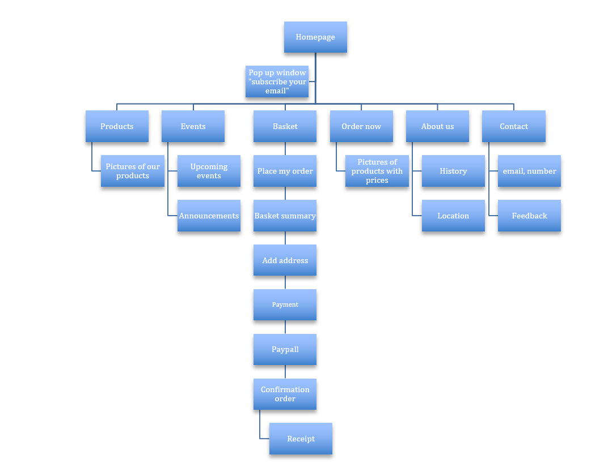

Our vision is to make the best ice-cream in town, which leads us to our goals to reach to as many people as possible. By creating a website, we hope that out business will reach to bigger and various audiences and to inform them about our offerings, business, location information etc. This site is needed as beneficial tool for our clients to get to know more about our business, which leads to our mission. We want to innovate the finest and best diary ice-cream with a commitment to incorporate wholesome, natural ingredients for great ice-cream lovers.
One of the most important processes we have to go through in order to get our web site to be successful are to have user testing among different people with different demographic background. These feedbacks gives us an insight on customers expectations to our website and feedbacks to our further improvements. In order to measure our success, we are required to calculate the amount of sales volume, so that the rate of revenue can be increased. Target Audience: Our target audiences are all ages, from children to elderlies that have a passion for ice-creams, but the web site will be focusing more to attract children and their families by using attractive colours and active use of media and animations to be children friendly.
Content:
- Pop up window, “subscribe your email”
- Homepage
- Products
- Events
- Order now
- About us
- Contacts/feedback

GIthub address: https://github.com/Iscreamfoicescream